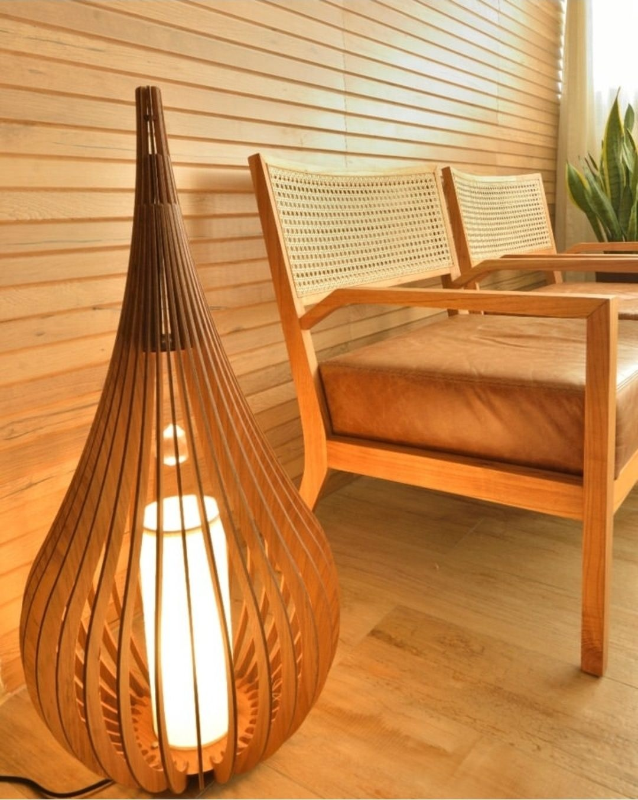

No Alto do Parque, em Salvador, a madeira conduz o estar e o jantar: o painel de ripas, a luminária, a poltrona e as cadeiras de palhinha.
Apartamento Alto do Parque
- Visão geral
- A sala reúne estar e jantar em tons de madeira e verde. Um painel de ripas de madeira emoldura a poltrona de palhinha, e o jantar ganha mesa redonda, cadeiras de palhinha e uma parede de quadros.
- Ambientes
- Estar e jantar
- Fotografia
- Roberto Moreira Rego
Materiais


Madeira nas ripas, na luminária e na estrutura da poltrona; palhinha no encosto e nas cadeiras do jantar; terracota nas mesinhas de apoio. O verde das plantas e das paredes fecha a paleta.
O jantar

No jantar, a parede verde recebe uma composição de quadros em molduras escuras, e a mesa redonda reúne as cadeiras de palhinha.